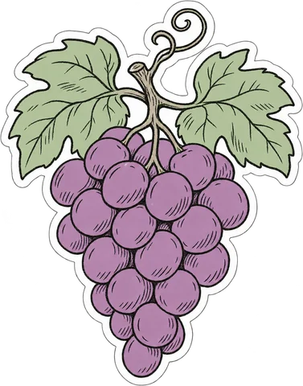
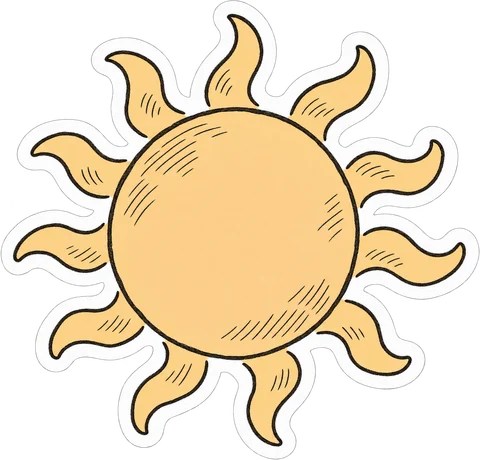

Eleonor Norrman
Projekt
Om mig
Kontakt


VÄDER × VIN
Vilket vin blir
det i dag?
Låt vädret bestämma.
Hitta mitt vin →
Eller testa ett annat väder:
☀️ Sol
☁️ Moln
🌧️ Regn
❄️ Snö
🌫️ Dimma
⛈️ Åska
📍 Stockholm nu
← Tillbaka till startsidan